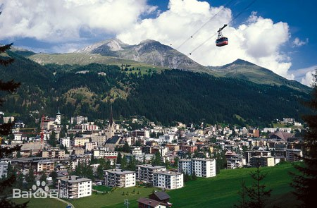
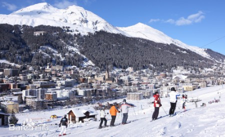
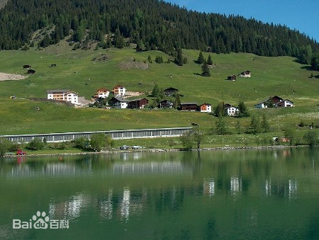
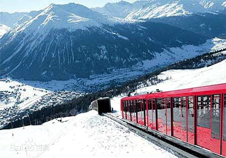

小镇格言
让德清市民真正享受到信息技术带来的便利，享受智慧生活。
时间：2020-03-25 11：20 编辑：student 来源：Internet
地理环境
达沃斯小镇
达沃斯小镇，位于瑞士东南部格里松斯地区，隶属格劳宾登州，坐落在一条17公里长的山谷里，靠近奥地利边境，它是阿尔卑斯山系最高的小镇。 在兰德瓦瑟河的达伏斯谷地，海拔1529米。人口约1.3万，主要讲德语。气候宜人，为疗养和旅游胜地。二十世纪起成为国际冬季运动中心之一。 电缆车可达海拔1530～2610米的滑冰运动场。窄轨车通库尔和恩加丁.设有阿尔卑斯学院。
达沃斯拥有欧洲最大的天然溜冰场，冬天还可以在此滑雪、滑冰、进行丰富多彩的活动。另外，这还是阿尔卑斯山中一块因空气洁净清爽而 大受好评的地区。 20世纪初这里设立了呼吸系统疾病的治疗所，奠定了现今宾馆业发展的基础除此之外，世界经济论坛 等大型会议在此设 施完备的会议中心召开。
达沃斯只有二条主要的道路，区域内的交通和瑞士主要的大城一样，以巴士为主要交通工具。其为旅馆和商店聚集的普罗姆纳(Promenade) 街及达尔街(Talstrasse)，这两条街都是单行道，只有巴士可以逆向行驶。
如果想看到达沃斯全景，可沿着普罗姆纳街向东走，遇布尔街(Buolstrasse)之后，再往上行即可看到。一般游客可在住宿的饭店，购 得"Guest Card"，使用于当地的巴士及火车等交通工具。
历史文化
达沃斯小镇
13世纪后半叶，讲德语的移民首先来到达沃斯，当时的瑞士统治者颁发了一项封地契约，赋予达沃斯居民自我管理的权力；后来随着人口增多， 到16世纪形成达沃斯城。19世纪末铁路开通后，达沃斯逐渐以疗养胜地闻名于欧洲，到20世纪中叶，245平方公里的达沃斯小镇已经成了阿尔卑 斯山区最大的度假胜地、体育和会议中心。不过，真正让达沃斯扬名天下的，还是38年前落户在这里的世界经济论坛。据说，会址之所以选择在达沃斯 ，只不过是因为当时年仅32岁的论坛创始人施瓦布先生酷爱滑雪罢了。不过，就是这个偶然事件，却让小镇从此快速发展起来。
达沃斯旅游小镇是欧洲海拔最高的城市，是著名的旅游胜地。 不光一年一度的世界经济论坛选在这里举行，各种体育盛会也不少。
相关信息
达沃斯年会
世界经济论坛(World Economic Forum，WEF)是一个非官方的国际组织，总部设在瑞士日内瓦。其前身是1971年由现任论坛主席、 日内瓦商学院教授克劳斯·施瓦布创建的“欧洲管理论坛”，因为这个论坛在全球的影响力不断扩大，它在5年以后改为会员制。
1987年，“欧洲管理论坛”更名为“世界经济论坛”。论坛的年会每年1月底至2月初在瑞士的达沃斯小镇召开，故也称“达沃斯论坛”。 而小镇达沃斯也因此闻名遐迩。
世界经济论坛是以研讨世界经济领域存在的问题、促进国际经济合作与交流为宗旨的非官方国际性机构，总部设在瑞士日内瓦。世界经济论坛的年会因每年的1月底至2 月初在瑞士的达沃斯小镇举行，故而又称“达沃斯论坛”或“冬季达沃斯”，至今已有35年的历史。
让德清市民真正享受到信息技术带来的便利，享受智慧生活。